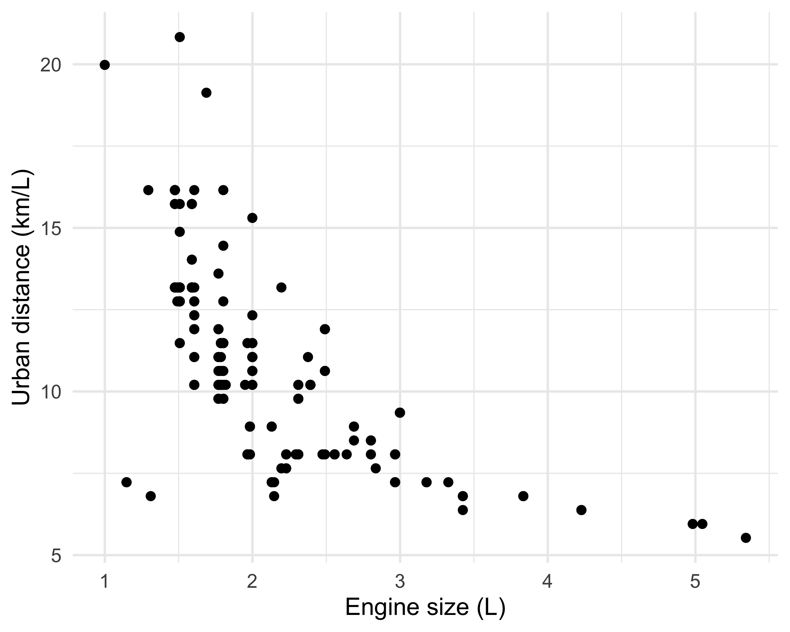
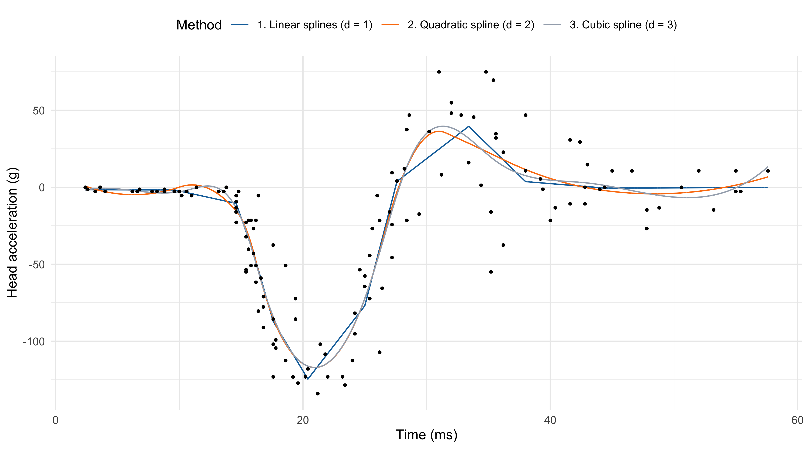
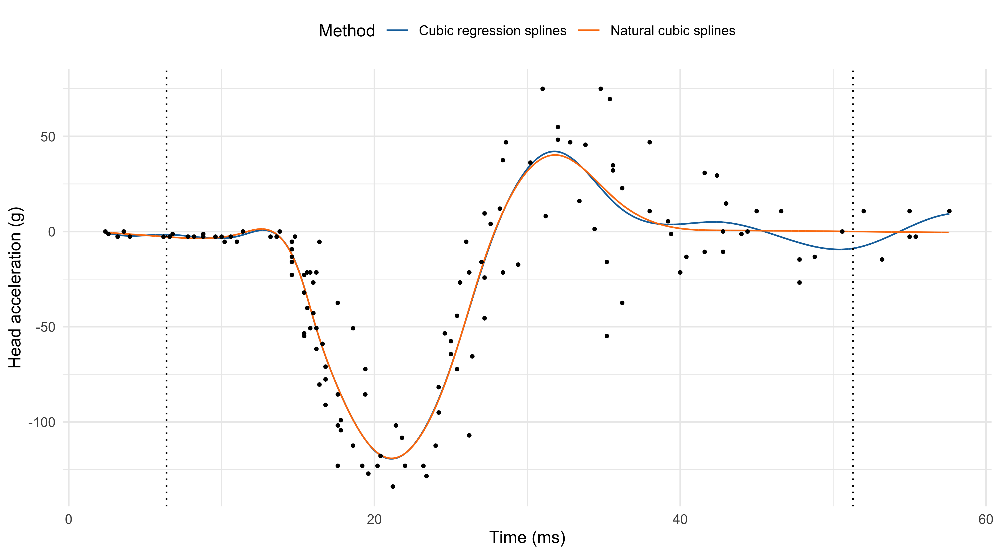
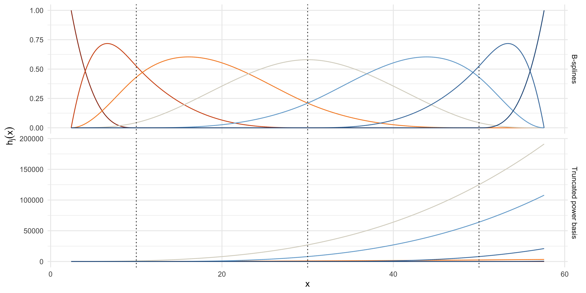

Nonparametric regression
Data Mining - CdL CLAMSES
Tommaso Rigon
Università degli Studi di Milano-Bicocca
Homepage
“Nonparametric regression might, like linear regression, become an object treasured both for its artistic merit as well as usefulness.”
Leo Breiman
This unit will cover the following topics:
- Kernel methods and local regression;
- Regression splines;
- Smoothing splines.
Let us consider again the relationship between a response variable Y_i and a set of covariates \bm{x}_i: Y_i = f(\bm{x}_i) + \epsilon_i, \qquad where \epsilon_i are iid with \mathbb{E}(\epsilon_i) = 0 and \text{var}(\epsilon_i) = \sigma^2.
We do not believe f(\bm{x}) is a polynomial nor it belongs to some parametric family of functions.
Can we fit a nonparametric relationship that does not make strong assumptions on f(\bm{x})? Let us review some old datasets…
Motivating applications
The cholesterol data
In this first example, a drug called “cholestyramine” is administered to n = 164 men.
We observe the pair (x_i, y_i) for each man.
The response y_i is the decrease in cholesterol level over the experiment.
The covariate x_i is a measure of compliance.
We assume, as before, that the data are generated according to Y_i = f(x_i) + \epsilon_i, \quad i=1,\dots,n.
In Unit B we fit a polynomial with degree 3 on this data, although there was some uncertainty.
The auto dataset
In Unit A we considered the
autodataset.We wanted to model the relationship between
city.distance(y) andengine.size(x).The chosen model involved a non-linear function Y_i = f(x_i) + \epsilon_i, \qquad i=1,\dots,n, where f(x) was “manually” selected.
There are no reasons to believe that f(x) = \alpha x^\beta or that f(x) belongs to any other parametric family.
We would like the data to “speak for themselves.”

The mcycle dataset

Data consist of variables y accelerometer (
accel) readings, taken through time x (times).The n = 133 observations were measured during a simulated motor-cycle crash experiment, for testing the efficacy of crash helmets.
Some characteristics of the data:
- The time points are not regularly spaced and sometimes there are multiple observations;
- The observations are subject to error;
- The errors \epsilon_i are probably heteroscedastic, but let us ignore this now.
It is of interest to discern the general shape of the underlying acceleration curve.
Old friends: polynomials
- In the
mcycledataset, it is not obvious which parametric function we should consider, therefore this route is not an option.
In theory polynomials can approximate a large class of functions, as a consequence of Taylor’s expansion theorem.
In the statistical practice, however, polynomial regression is not very well suited for modeling complex relationships.
When performing flexible regression, we expect the prediction at x_i to depend on observations close to x_i. However, polynomials are not local.
Instead, in polynomial regression points that are far away from x_i have a big impact on \hat{f}(x_i). This produces spurious oscillations at the boundaries and unstable estimates.
This is known as Runge’s phenomenon in numerical analysis.
Old friends: polynomials (mcycle data)

Local regression
The regression function
The only assumption we are making in this Unit is the following additive structure Y_i = f(x_i) + \epsilon_i, \qquad i=1,\dots,n, where \epsilon_i are iid with \mathbb{E}(\epsilon_i) = 0 and \text{var}(\epsilon_i) = \sigma^2. This structure can be relaxed even further.
Let \tilde{Y}_i be a new data point. In Unit B we showed that under the quadratic loss \mathbb{E}\left[\{\tilde{Y}_i - \hat{f}(x_i)\}^2\right], the best prediction \hat{f}(x_i), i.e. the one minimizing the loss, coincides with \hat{f}(x_i) = \mathbb{E}(\tilde{Y}_i) = f(x_i), which is the conditional expectation of Y_i given the value x_i, called regression function.
The regression function f(x_i) = \mathbb{E}(\tilde{Y}_i) is the optimal prediction even in presence of heteroschedastic data or when the above additive decomposition does not hold.
Local estimates of the prediction
We do not know f(x), but the previous formulas suggest that we could consider an arithmetic average of the data points.
Hence, a prediction for a generic value x could be obtained as follows: \hat{f}(x) = \frac{1}{n_x}\sum_{i : x_i = x} y_i, \qquad n_x = \sum_{i=1}^n I(x_i = x).
This idea, unfortunately, does not work in most practical cases.
Indeed, in a typical dataset it is very unlikely that there exist multiple observations exactly equal to x among the points (x_i, y_i).
Even if there were values such that x_i = x, the sample size n_x would be so small (e.g. n_x = 1) that the variance of \hat{f}(x) would be extremely high, making this estimator useless.
- However, this “local average” idea seems intuitively appealing. Can we “fix” it?
K-nearest neighbours
Instead of considering the values exactly equal to x, we could identify the pairs (x_i, y_i) that are close to (i.e. in a neighbour of) x.
A natural measure of proximity between x and the data points x_i is the Euclidean distance |x_i - x|, but in principle any other metric could be used.
We consider an average of the k values y_i whose x_i are nearest to x, that is: \hat{f}(x) = \frac{1}{|\mathcal{N}_x|}\sum_{i \in \mathcal{N}_x} y_i, where \mathcal{N}_x is indeed the set of k points nearest to x in Euclidean distance.
This method is called k-nearest neighbours (KNN).
K-nearest neighbours (k = 6)

Nadaraya-Watson estimator
- The Nadaraya-Watson estimator addresses the aforementioned issues of the KNN method. It is a weighted average \hat{f}(x) = \frac{1}{\sum_{i'=1}^n w_{i'}(x)}\sum_{i=1}^n w_i(x) y_i = \sum_{i=1}^n s_i(x) y_i, where s_i(x) = w_i(x) / \sum_{i'=1}^n w_{i'}(x) are the normalized weights.
- The values w_i(x) \ge 0 are chosen so that the points x_i close to x are weighted more.
A convenient way of selecting these weights is through kernel functions: w_i(x) = \frac{1}{h}w\left(\frac{x_i - x}{h}\right), \qquad i=1,\dots,n, where w(\cdot) is a density function, symmetric around the origin, called kernel in this context.
The value h > 0 is a scale factor, sometimes called bandwidth or smoothing parameter.
Nadaraya-Watson estimator: comments
The fitted function \hat{f}(x) is continuous and is obtained by computing several weighted averages, one for each value of x.
A popular kernel is the Gaussian kernel, that is: w_i(x) = \frac{1}{h} \phi\left(\frac{x_i - x}{h}\right), \qquad i=1,\dots,n, therefore h^2 represents the variance. We will discuss alternative choices later on.
The most important factor, however, is not the functional form of w(\cdot), but rather the smoothing parameter h, which is a complexity parameter.
Indeed, h defines the “smoothing window” on the x-axis, i.e. the relevant data points that are considered for \hat{f}(x).
As with any complexity parameter, h should be chosen via cross-validation or related ideas.
Nadaraya-Watson (Gaussian kernel)


Local linear regression I
Local linear regression is a refinement of the Nadaraya-Watson estimator that has typically lower bias, especially at the boundaries, without noticeable increases in variance.
If f(x) is differentiable, then it can be approximated with a linear function tangent in x_0: f(x) = \underbrace{f(x_0)}_{\beta_1} + \underbrace{f'(x_0)}_{\beta_2}(x - x_0) + \text{rest}.
Hence, instead of computing a local average (\beta_2 = 0), we consider a local linear model. In other words, for every x we seek the coefficients solving: \hat{\beta}(x) = \left(\hat{\beta}_1(x), \hat{\beta}_2(x)\right) = \arg\min_{(\beta_1, \beta_2)} \sum_{i=1}^n \textcolor{darkblue}{w_i(x)}\left\{y_i - \beta_1 - \textcolor{red}{\beta_2(x_i - x)}\right\}^2.
Once the parameter \hat{\beta}_1(x) and \hat{\beta}_2(x) are obtained, the local linear regression estimator is \hat{f}(x) = \hat{\beta}_1(x) + \hat{\beta}_2(x) (x - x) = \hat{\beta}_1(x).
Local linear regression II
The local linear regression, as we have seen in Unit A, has an explicit solution: \hat{\beta}(x) = (\bm{X}_x^T\bm{W}_x\bm{X}_x)^{-1}\bm{X}_x^T\bm{W}_x\bm{y}, where the rows of \bm{X}_x are \bm{x}_{i,x} = (1, x_i - x) and \bm{W}_x = \text{diag}\{w_1(x),\dots,w_n(x)\}.
In practice, we do not need to solve this linear algebra problem. An even more explicit and non-iterative solution can be found (see Exercises).
Theorem (Local linear smoothing)
The local linear regression smoother, evaluated in x, admits an explicit expression: \hat{f}(x) = \frac{1}{n}\sum_{i=1}^n \frac{w_i(x) \{a_2(x) - (x_i - x) a_1(x)\}}{a_2(x)a_0(x) - a_1(x)^2 } y_i = \sum_{i=1}^n s_i(x) y_i, where a_j(x) = n^{-1}\sum_{i=1}^n w_i(x) (x_i - x)^j, for j=0,1,2.
Local linear regression (h = 1.46, Gaussian kernel)
Linear smoothers I
- The Nadaraya-Watson estimator and local linear regression are special instances of linear smoothers, which are estimators having the following form: \hat{f}(x) = \sum_{i=1}^ns_i(x) y_i.
We will study other members of this class, such as regression and smoothing splines.
Polynomial regression, ridge regression, Gaussian processes and moving averages are also linear smoothers.
- The mean (and hence the bias), and the variance of a linear smoother can be easily obtained: \mathbb{E}\{\hat{f}(x)\} = \sum_{i=1}^n s_i(x)f(x_i), \qquad \text{var}\{\hat{f}(x)\} = \sigma^2\sum_{i=1}^ns_i(x)^2.
Linear smoothers II
- In linear smoothers, we can express the predicted values \hat{\bm{y}} using matrix notation \hat{\bm{y}} = \sum_{i=1}^n\bm{s}_i \bm{y} = \bm{S}\bm{y}, \qquad \bm{s}_i = (s_1(x_i), \dots, s_n(x_i))^T, where \bm{S} = (\bm{s}_1,\dots,\bm{s}_n)^T is the so-called n \times n smoothing matrix.
- Each row of the smoothing matrix \bm{s}_i is called equivalent kernel for estimating \hat{f}(x_i); in the Nadaraya Watson estimator \bm{s}_i is indeed a normalized kernel.
The weights of all the smoothers we will use are such that \sum_{i=1}^ns_i(x) = 1 for all x.
Hence, the smoother preserves constant curves, namely if all y_i = c, then \hat{f}(x) = c.
On the choice of the kernel
- As mentioned before, the choice of the kernel is not crucial. Some alternatives are:
| Kernel | w(x) | Support |
|---|---|---|
| Gaussian | \frac{1}{\sqrt{2 \pi}}\exp{\left(-\frac{x^2}{2}\right)} | \mathbb{R} |
| Rectangular | \frac{1}{2} | (-1, 1) |
| Epanechnikov | \frac{3}{4}(1 - x^2) | (-1, 1) |
| Bi-quadratic | \frac{15}{16}(1 - x^2)^2 | (-1, 1) |
| Tri-cubic | \frac{70}{81}(1 - |x|^3)^3 | (-1, 1) |
- Some asymptotic considerations lead to the choice of the “optimal” Epanechnikov kernel.
Bounded kernels have computational advantages, because one needs to compute averages of a limited number of data points.
On the other hand, bounded kernels may lead to discontinuous derivatives of \hat{f}(x) that could be unappealing in certain contexts.
Bias-variance tradeoff
Theorem (Fan and Gijbels, 1996, Theorem 3.1)
Let (X_i, Y_i) be iid random vectors with g(x) denoting the marginal density of X_i. The conditional law is such that Y_i = f(X_i) + \epsilon_i, with \epsilon_i iid and \mathbb{E}(\epsilon_i) = 0, \text{var}(\epsilon_i) = \sigma^2.
Moreover, suppose g(x) > 0 and that g(\cdot) and f''(\cdot) are continuous in a neighborhood of x. Then, as h \rightarrow 0 and n h \rightarrow \infty we have that for the local linear regression \hat{f}(x) the bias is \mathbb{E}\{\hat{f}(x) - f(x) \} \approx \frac{\textcolor{red}{h^2}}{2}\sigma^2_w f''(x), where \sigma^2_w = \int z^2 w(z)\mathrm{d}z. In addition, the variance is \text{var}\{\hat{f}(x)\} \approx \frac{\sigma^2}{\textcolor{darkblue}{n h}} \frac{\alpha_w}{g(x)}, where \alpha_w = \int w^2(z)\mathrm{d}z.
Bias-variance tradeoff II
The previous theorem shows that bias is of order h^2 and the variance is of order (1 / nh).
Once again, there is a trade-off because we would like h \rightarrow 0 but, at the same time, we need to keep the variance under control.
- We can select h so that the asymptotic mean squared error is minimal. This leads to the following optimal choice for the bandwidth: h_\text{opt}(x) = \left(\frac{1}{n} \frac{\sigma^2 \alpha_w}{\sigma^4_w f''(x)^2 g(x)}\right)^{1/5}.
Unfortunately, h_\text{opt}(x) is of little practical utility, as it involves the unknown terms f''(x), g(x) and \sigma^2. However, it highlights two important facts:
The bandwidth h should decrease at the rate n^{-1/5}, i.e. quite slowly.
If we plug-in h_\text{opt}(x) into the bias/variance formulas, we get that the mean squared error tends to 0 at the rate n^{-4/5}, which is much slower than the parametric case n^{-1}.
☠️ - Bias reduction of local linear regression
Compared to the Nadaraya-Watson estimator, local linear regression corrects the first-order term of the bias, without affecting the variance sensibly.
Indeed, it can be shown that the asymptotic variance of Nadaraya-Watson and local linear regression is the same, but the asymptotic bias is different.
To get an intuition of this, consider the following Taylor expansion for \mathbb{E}\{\hat{f}(x)\} around x, and for the local linear regression case: \begin{aligned} \mathbb{E}\{\hat{f}(x)\} &= \sum_{i=1}^n s_i(x)f(x_i) \\ & = f(x)\underbrace{\sum_{i=1}^ns_i(x)}_{=1} + f'(x) \underbrace{\sum_{i=1}^n(x_i - x)s_i(x)}_{=0} + \frac{f''(x)}{2}\sum_{i=1}^n(x_i - x)^2s_i(x) + \text{rest}. \end{aligned}
It can be shown with some algebra that the first-order term simplifies (=0) in the local linear regression case, but it doesn’t for the Nadaraya-Watson, therefore reducing the bias.
Choice of the bandwidth I
In practice, we need to choose the bandwidth by other means. A first solution is based on information criteria such as the C_p or the AIC/BIC.
However, as before, their usage requires a suitable notion of effective degrees of freedom.
Effective degrees of freedom for linear smoothers
Let \hat{f}(x) = \sum_{i=1}^ns_i(x)y_i be a linear smoother. Then the effective degrees of freedom are \text{df}_\text{sm} = \frac{1}{\sigma^2}\sum_{i=1}^n\text{cov}(Y_i, \hat{f}(x_i)) =\frac{1}{\sigma^2} \text{tr}\{\text{cov}(\bm{Y}, \bm{S}\bm{Y})\} = \frac{\sigma^2}{\sigma^2}\text{tr} (\bm{S}) = \text{tr} (\bm{S}).
- Some authors proposed to use \text{tr}(\bm{S}\bm{S}^T) or \text{tr}(2\bm{S}-\bm{S}\bm{S}^T), but the connection with the optimism and the definition of effective degrees of freedom is less clear.
Choice of the bandwidth II
- Cross-validation is another option for selecting the bandwidth h. For most linear smoothers there is a brilliant computational shortcut for the leave-one-out case.
- Any reasonable linear smoother is constant preserving, that is \sum_{j=1}^ns_j(x) = 1 for all x. Moreover, for most linear smoothers the following property holds: \hat{y}_{-i} = \frac{1}{1 - s_i(x_i)}\sum_{j \neq i} s_j(x_i) y_j.
- In other words, the leave-one-out predictions can be obtained by excluding the ith observation and re-normalizing the weights.
A linear smoother is called projective if it has the above property.
All the linear smoothers presented in this unit (Nadaraya-Watson, local linear regression, regression an smoothing splines) are projective (see Exercises).
Choice of the bandwidth III
Theorem (LOO-CV for linear smoothers)
Let \hat{y}_{-i} = \hat{f}_{-i}(x_i) be the leave-one-out predictions of a projective linear smoother and let \hat{\bm{y}} = \bm{S}\bm{y} be the predictions of the full model. Then: y_i - \hat{y}_{-i} = \frac{y_i - \hat{y}_i}{1 - [\bm{S}]_{ii}}, \qquad i=1,\dots,n. Therefore, the leave-one-out mean squared error is \widehat{\mathrm{Err}} = \frac{1}{n}\sum_{i=1}^n \left(\frac{y_i - \hat{y}_i}{1 - [\bm{S}]_{ii}}\right)^2.
Choice of the bandwidth IV
Loess
Sometimes it is convenient to choose h adaptively, i.e. specifying a variable bandwidth h(x) that depends on the local density of the data.
Indeed, recall that the asymptotic variance depends on the sampling design of the x_is \text{var}\{\hat{f}(x)\} \approx \frac{\sigma^2}{n h} \frac{\alpha_w}{\textcolor{darkblue}{g(x)}}.
- The
loess(Cleveland, 1979) considers a fixed percentage of data points (assuming a bounded kernel is used), which automatically induces a variable bandwidth, as in KNN.
- Moreover, the
loessalgorithm combines the variable bandwidth with some robust estimation ideas, so that outliers less influence the resulting estimate.
loessis a short-hand for “locally weighted estimated scatterplot smoothing”.
Local likelihoods
The concept of local regression and varying coefficients is extremely broad.
In principle, any parametric model can be made local as long as it accommodates weights.
- Let us consider a logistic regression with a single predictor. For every value x we seek (\hat{\beta}_1,\hat{\beta}_2)= \arg\max_{(\beta_1, \beta_2)}\sum_{i=1}^nw_i(x)\left[y_i (\beta_1 + \beta_2 x_i) - \log\{1 + \exp(\beta_1 + \beta_2 x_i)\}\right], whose solution can be found using iteratively re-weighted least squares.
The computations and the theory are not as straightforward and limpid as in the regression case, but they do hold in an approximate sense.
Once again, the conceptual scheme is: (i) perform a quadratic approximation of the log-likelihood; (ii) proceed as in the regression case.
The bivariate case
Local linear regression can be applied when two or more covariates, say p, are used. Let us begin with two covariates so that y_i = f(x_{i1}, x_{i2}) + \epsilon_i.
To estimate f on a specific point \bm{x} = (x_1,x_2)^T, a natural extension of local linear regression takes the form (\hat{\beta}_1, \hat{\beta}_2, \hat{\beta}_3) = \arg\min_{(\beta_1, \beta_2, \beta_3)} \sum_{i=1}^n w_i(\bm{x})\left\{y_i - \beta_1 - \beta_2(x_{i1} - x_1) - \beta_3(x_{i2} - x_2) \right\}^2.
A common way of choosing the weights w_i(\bm{x}) is to set w_i(\bm{x}) = \frac{1}{h_1 h_2} w\left(\frac{x_{i1} - x_1}{h_1}\right)w\left(\frac{x_{i2} - x_2}{h_2}\right).
Clearly, this now involves the choice of two different smoothing parameters.
The bivariate case (h_1 = 0.5, h_2 = 150)
Pros and cons of kernel nonparametric regression
Pros
Local linear regression is a nonparametric estimator for unknown functions f(x) which makes very few assumptions on its form.
The procedure is simple and computationally efficient.
The smoothing parameter h can be easily handled, since \hat{f}(x) a linear smoother.
Cons
There is a price to pay for not making assumptions: estimation is less efficient in terms of mean squared error compared to parametric models (when they are correctly specified!).
This is a drawback of all nonparametric estimators, not just local linear regression.
Regression splines
Basis expansions
- The idea of polynomial regression can be generalized and improved. The main idea is to augment or replace the input x with additional variables (basis expansion).
Let h_1(x), \dots, h_p(x) be pre-specified functions h_j(x) : \mathbb{R} \rightarrow \mathbb{R} that transform the original predictor x in some non-linear fashion. Then, we let f(x;\beta) = \sum_{j=1}^p h_j(x) \beta_j, where \beta = (\beta_1, \dots, \beta_p)^T is a vector of unknown coefficients.
Polynomials are a specific instance of basis expansion, in which h_1(x) = 1, \quad h_2(x) = x, \quad h_3(x) = x^2, \quad \dots \quad h_p(x) = x^{p-1}.
- The main advantage of this approach is its linearity in the parameters, because it means that ordinary least squares can be used for the estimation of \beta.
Piecewise regression I
- A piecewise constant regression model is another instance of basis expansions, in which we consider step functions, say p = 3 h_1(x) = I(x < \xi_1), \quad h_2(x) = I(\xi_1 \le x < \xi_2), \quad h_3(x) = I(x \ge \xi_2), where \xi = (\xi_1,\xi_2) are pre-specified cutpoints, called knots. Here \xi = (15, 25).
Piecewise regression II
- The previous choice of knots is not working very well. The model is not flexible enough.
- To improve the fit, we could consider piecewise polynomial functions rather than constant. For example, a piecewise quadratic function with p = 30 is \begin{aligned} h_1(x) &= I(x < \xi_1), && h_2(x) = x\:I(x < \xi_1), &&& h_3(x) = x^2\:I(x < \xi_1), \\ h_4(x) &= I(\xi_1 \le x <\xi_2), &&h_5(x) = x\:I(\xi_1 \le x < \xi_2), &&& h_6(x) = x^2\:I(\xi_1 \le x < \xi_2), \\ \vdots & &&\vdots &&&\vdots\\ h_{28}(x) &= I(x \ge \xi_9), &&h_{29}(x) = x\:I(x \ge \xi_9), &&& h_{30}(x) = x^2\:I(x \ge \xi_9).\\ \end{aligned}
- The piecewise quadratic f(x; \beta) = \sum_{j=1}^{30} h_j(x) \beta_j is not continuous e.g. at the knot \xi_1: \beta_1 + \beta_2 \xi_1 + \beta_3\xi_1^2 \neq \beta_4 + \beta_5 \xi_1 + \beta_6\xi_1^2. To achieve smoothness, it would be appealing to add some continuity constraints.
Piecewise polynomial functions

Splines I
Splines are piecewise polynomial functions with smoothness and continuity constraints.
Originally developed for ship-building to draw a smooth curve through a set of points.
The solution was to place metal weights (called knots) at the control points, and bend a thin metal or wooden beam (called a spline) through the weights.

Splines II
Definition (Spline of degree d)
Let \xi_1 < \cdots < \xi_k be a set of ordered points called knots belonging to the interval (a, b).
A spline f(x; \beta) : (a, b) \rightarrow \mathbb{R} of degree d is a piecewise polynomial function of degree d that has continuous derivatives up to order d - 1.
- Cubic splines (d = 3) are the most common spline used in practice.
Definition (Cubic spline, d = 3)
Letting \xi_1 < \dots < \xi_k denote a set of ordered knots, a cubic spline f(x; \beta) is a piecewise cubic polynomial that has continuous first and second derivatives.
Splines III
- Figure 5.2 of HTF (2011), in which are shown piecewise cubic polynomials with increasing regularity. The bottom-right plot (green line) depicts a cubic spline.
Splines IV
- To recap: a spline of degree d is a piecewise polynomial f(x; \beta) of order d such that f(\xi_j^+) = f(\xi_j^-), \dots, f^{(d-1)}(\xi_j^+) = f^{(d-1)}(\xi_j^-), \qquad j=1,\dots,k, where \xi_j^+ and \xi_j^- denote the left and the right limits.
- The degree d controls the amount of smoothness:
- d = 0 is a piecewise constant function;
- d = 1 is a polygonal line (continuous, but with discontinuous first derivative).
- Higher values of d increase the smoothness, but the spline behaves more and more like a global polynomial. In practice, one rarely goes beyond d = 3.
- The current definition of spline is quite abstract and non-operative. How do we fit a regression model whose f(x; \beta) is a spline?
Truncated power basis
Theorem (Truncated power basis)
Let \xi_1 < \cdots < \xi_k be a set of ordered points called knots belonging to (a, b). Let h_j(x) = x^{j-1}, \qquad j=1,\dots,d + 1, and h_j(x) = (x - \xi_j)_+^d, \qquad j = 2 + d, \dots, k + d + 1. Then, the functions \{h_1,\dots,h_{k+d + 1}\} form a basis for the set of splines of degree d at these knots, called the truncated power basis.
Thus, any dth degree spline f(x, \beta) with these knots can be written as a basis expansion f(x; \beta) = \sum_{j=1}^{k+d+1}h_j(x) \beta_j.
Regression splines
- The truncated power basis is a constructive way of defining splines. Moreover, it clarifies that splines are linear in the parameters.
- Let \bm{B} be a n \times p design matrix whose elements are obtained from the basis functions: [\bm{B}]_{ij} = h_j(x_i), \qquad j=1,\dots,p; \quad i=1,\dots,n.
Let f(x;\beta) = \sum_{j=1}^p h_j(x)\beta_j. Then, the ordinary least squares for \beta are obtained as usual: \hat{\beta} = (\bm{B}^T\bm{B})^{-1}\bm{B}^T\bm{y} \implies \hat{f}(x) = \sum_{j=1}^p h_j(x)\hat{\beta}_j = \sum_{i=1}^n s_i(x) y_i.
Hence, regression splines are another instance of linear smoother (actually, of linear model). The smoothing matrix in this case is \bm{S} = \bm{B} (\bm{B}^T\bm{B})^{-1}\bm{B}^T, so that \text{tr}(\bm{S}) = p.
- Regression splines are generating “new” covariates. Hence, their extension to GLMs, particularly to logistic regression, is straightforward.
On the choice of the knots
- The knots’ placement and their number k are complexity parameters, which should be chosen via cross-validation or other tools.
- In principle, the position of the knots could be manually selected to get the best fit. However, this results in an incredible optimization problem.
- In practice, the knots are typically selected in two ways:
- Knots are equally spaced on a grid of values ranging from \min(x) to \max(x);
- Knots are placed on quantiles (
bsdefault), to get variable bandwidth.
- The degree d influences the number of knots we can place for a fixed number of degrees of freedom p. For example:
- In linear splines (d = 1), with p = 12 we can place k = p - d - 1 = 10 knots;
- In quadratic splines (d = 2), with p = 12 we can place k = 9 knots;
- In cubic splines (d = 3), with p = 12 we can place k = 8 knots.
Regression splines (p = 12)
On the choice of p (cubic splines)
Natural cubic splines I
- Polynomials fit beyond the boundary knots \xi_1 and \xi_k tends to be erratic. Prediction and extrapolations can be dangerous.
Definition (Natural cubic spline)
A natural cubic spline f(x; \beta) is a cubic spline which is linear beyond the boundary knots \xi_1 and \xi_k, which means f''(\xi_1) = f''(\xi_k) = 0.
- Natural cubic splines enforce 4 additional constraints; these degrees of freedom can be used more efficiently to place more internal knots.
Proposition
A set of n \ge 2 distinct points (x_i, y_i) can be interpolated using a natural cubic spline with the data points x_1 < \dots < x_n as knots. The interpolating natural cubic spline is unique.
Natural cubic splines II
- In practice, the truncated power basis can be easily modified, to get the following basis \begin{aligned} &N_1(x) = 1, \quad N_2(x) = x, \\ &N_{j + 2}(x) = \frac{(x - \xi_j)^3_+ - (x - \xi_k)^3_+}{\xi_k - \xi_j} - \frac{(x - \xi_{k-1})^3_+ - (x - \xi_k)^3_+}{\xi_k - \xi_{k-1}}, \quad j = 1,\dots,k - 2. \end{aligned}
- This formula is a scaled version of the truncated power basis for any x \le \xi_{k-1}, namely N_{j+2}(x) = \frac{(x - \xi_j)^3_+}{\xi_k - \xi_j}, \qquad x \le \xi_{k-1}, \quad j = 1,\dots,k - 2. The formula becomes more complicated when x > \xi_{k-1} and the constraint is enforced.
- Hence, in natural cubic splines k = p and the function can be express as follows f(x; \beta) = \sum_{j=1}^k N_j(x)\beta_j.
Natural cubic splines (k = 12)
Computations: B-splines I
Despite their conceptual simplicity, the truncated power basis and its “natural” modification are not used in practice, due to ill-conditioning.
Indeed, the condition number of \bm{B}^T\bm{B} using a truncated power basis is very large, leading to numerical inaccuracies.
For this reason, more computationally convenient bases are preferred. This means we will consider an equivalent set of functions \mathcal{B}_1(x),\dots,\mathcal{B}_p(x) such that \mathcal{B}_j(x) = \sum_{\ell=1}^p\gamma_{\ell j} h_\ell(x), \qquad j=1,\dots,p, for some set of weights \gamma_{\ell j} that makes this transformation one-to-one.
Since we are performing a linear transformation, if ordinary least squares are used, this does not change the fit.
A particularly convenient basis are B-splines, which are local and numerically stable. They admit a direct construction; i.e., we do not need to compute the coefficients \gamma_{\ell j}.
Computations: B-splines II
☠️ - Details of B-splines I
- Define \xi = (\xi_1,\dots,\xi_k) and consider an augmented sequence of ordered knots \tau = (\tau_1,\dots,\tau_{k + 2d + 2}) = (\underbrace{\xi_{-d},\dots,\xi_0}_{\text{auxiliary knots}}, \: \xi,\: \underbrace{\xi_{k+1},\dots,\xi_{k + d + 1}}_{\text{auxiliary knots}}). The most common choice is \xi_{-d}= \dots = \xi_0 = a and \xi_{k+1} = \dots = \xi_{k + d+ 1} = b.
- Step 1. For j = 1,\dots, k + 2d + 1, obtain the B-spline of degree m = 0 as follows: \mathcal{B}_{j,0}(x) = I_{[\tau_j, \tau_{j+1})}(x), where by convention we say that \mathcal{B}_{j,0}(x) = 0 if the knots are equal \tau_j = \tau_{j+1}.
- Step 2 (recursion). The B-spline of degree m \le d are obtained recursively, so that \mathcal{B}_{j, m}(x) = \frac{x - \tau_j}{\tau_{j + m} - \tau_j}\mathcal{B}_{j, m-1}(x) + \frac{\tau_{j + m + 1} - x}{\tau_{j + m + 1} - \tau_{j +1}}\mathcal{B}_{j + 1, m-1}(x), for j=1,\dots,k + 2d + 1 - m and for m=1,\dots,d.
☠️ - Details of B-splines II
The intercept term is implicitly included in a B-spline basis, in fact \sum_{j=1}^{k + d + 1}\mathcal{B}_{j, d}(x) = 1, \qquad x \in (a, b).
B-splines \tau have local support, which means that for j=1,\dots,k + 2d + 1 - m we have \begin{aligned} &\mathcal{B}_{j, d}(x) = 0, \qquad x \not\in (\tau_j, \tau_{j+d+1}), \\ &\mathcal{B}_{j, d}(x) > 0, \qquad x \in (\tau_j, \tau_{j+d +1}). \end{aligned} This implies that the support of cubic B-splines is at most 4 knots.
The presence of structural zeros implies that, when computing ordinary least squares, extremely efficient Cholesky factorization for banded matrices can be exploited.
The B-spline basis can be modified to produce a natural cubic spline, by numerically enforcing the linearity constraint. This is implemented in the
nsR function.
Pros and cons of regression splines
Pros
Regression splines is a semi-parametric estimator for unknown functions f(x).
They are essentially a linear model with smart covariates that account for non-linearity. Hence, the procedure is simple and computationally efficient (thanks to B-splines).
The smoothing parameter k is discrete and can be easily handled, being directly associated with the number of degrees of freedom.
They are trivial to extend to generalized linear models.
Cons
Knot placement based on quantiles or other automatic choices could be inefficient.
Manual placement of the knots is out of question because it is an almost impossible optimization problem.
Smoothing splines
Smoothing splines I
- Let us consider the following penalized least squares criterion \mathscr{L}(f; \lambda) = \sum_{i=1}^n\{y_i - f(x_i)\}^2 + \lambda \underbrace{\int_a^b\{f''(t)\}^2\mathrm{d}t}_{\text{roughness penalty}}, where (a, b) is an interval containing the data points and \lambda > 0 is a smoothing parameter.
We consider as our estimator the minimizer of the above loss, that is \hat{f}(x) = \arg\min_{f \in \mathcal{F}} \mathscr{L}(f; \lambda), where \mathcal{F} is a sufficiently regular functional space (Sobolev space).
The roughness penalty quantifies the “wiggliness” of the curve. There are two extremes:
- When \lambda = 0 there is no penalization: any solution interpolates the points (x_i, y_i);
- When \lambda = \infty then necessarily f''(x) = 0, i.e. the solution is a linear model.
Smoothing splines II
Theorem (Green and Silverman, 1994)
Let n_0 \le n be the distinct points among x_1,\dots,x_n, with x_i \in (a,b). Suppose n_0 \ge 3.
Then, for any \lambda > 0 the minimizer of \mathscr{L}(f; \lambda) is unique and is a natural cubic spline with n_0 knots at the distinct points.
The Green and Silverman theorem is remarkably elegant and powerful.
Since the solution is a natural cubic spline, we can write it as follows: f(x; \beta) = \sum_{j=1}^{n_0} N_j(x)\beta_j, whose coefficients \beta still needs to be determined.
- In smoothing splines, we do not need to choose the knots: every distinct observation is a knot. The model is not overparametrized because the complexity is controlled by \lambda.
Smoothing splines III
- Since f(x;\beta) is a natural cubic spline, the penalized least squares criterion becomes \mathscr{L}(\beta; \lambda) = \sum_{i=1}^n\{y_i - f(x_i; \beta)\}^2 + \lambda \beta^T\bm{\Omega}\beta, \qquad [\bm{\Omega}]_{jk} = \int_a^bN''_j(t)N''_k(t)\mathrm{d}t, whose minimization over \beta is much easier, because it becomes finite-dimensional.
- The minimization of \mathscr{L}(\beta; \lambda) is reminiscent of ridge regression, and in fact the solution is \hat{\beta} = (\bm{N}^T\bm{N} + \lambda \bm{\Omega})^{-1}\bm{N}^T\bm{y}, \qquad [\bm{N}]_{ij} = N_j(x_i). which leads to a linear smoother, with \bm{S} = \bm{N}(\bm{N}^T\bm{N} + \lambda \bm{\Omega})^{-1}\bm{N}^T.
The above formula is not used in practice directly. The
smooth.splineR implementation relies on B-splines to make computations fast and stable.Alternatively, the so-called Reinsch (1967) algorithm has computational complexity \sim n.
Smoothing splines (\text{df}_\text{sm} = 12.26)
The equivalent kernel
- As already mentioned, smoothing splines are linear smoothers, which means that \hat{f}(x) = \sum_{i=1}^ns_i(x) y_i.
- Provided x is not too near the edge of the interval (a, b), and \lambda is not too big or too small, we obtain the following approximation for the equivalent kernel s_i(x) \approx \frac{1}{g(x)}\frac{1}{h(x)}w\left(\frac{x - x_i}{h(x)}\right).
- The kernel function w(t), which is not a density, and the local bandwidth equal to w(t) = \frac{1}{2}\exp\left(-\frac{|t|}{\sqrt{2}}\right)\sin\left(\frac{|t|}{\sqrt{2}} + \frac{\pi}{4}\right), \qquad h(x) = \lambda^{1/4} \{\textcolor{red}{n} \textcolor{darkblue}{g(x)}\}^{-1/4}.
- Smoothing splines automatically incorporate a local bandwidth decreasing with n.
Multi-dimensional splines
- There are several ways of extending regression and smoothing splines to the multivariate case. An example are tensor splines, based on the cross-multiplication of basis functions.
- Another instance are the thin-plate splines, in which the 2d roughness penalty becomes \int_{\mathbb{R}^2}\left\{\left(\frac{\partial^2 f(x_1,x_2)}{\partial x_1^2}\right)^2 + 2\left(\frac{\partial^2 f(x_1,x_2)}{\partial x_1 \partial x_2}\right)^2 + \left(\frac{\partial^2 f(x_1,x_2)}{\partial x_2^2}\right)^2\right\}\mathrm{d}x_1\mathrm{d}x_2. The minimization of the above loss has a simple finite-dimensional solution.
- We do not discuss any further multi-dimensional splines because, when the dimension is large, they are affected by the so-called curse of dimensionality; see Unit E.
Nonetheless, the 2d case is extremely useful in spatial statistics, in which x_1 and x_2 represent longitude and latitude.
There will be a strong connection between the smoothers we have seen in this unit and the so-called kriging equations.
Further properties of smoothing splines
- Extension of smoothing splines to generalized linear models is possible by adding the “roughness” penalty to the log-likelihood function.
Smoothing splines have a Bayesian interpretation, being an instance of Gaussian process.
From a theoretical perspective, there exists (Chapter 5.8 of HTF, 2011) an elegant theory based on reproducing kernel Hilbert spaces, that unifies:
- Gaussian processes;
- Smoothing splines;
- Support vector machine.
Pro-tip (a joke?)
“If you want to derive an estimator that performs well in practice, define a Bayesian model, derive the posterior mean, call this a frequentist estimator, and hide all evidence you ever considered a Bayesian approach.” Credits to Eric B. Laber
Pros and cons of smoothing splines
Pros
Smoothing splines is a nonparametric estimator for unknown functions f(x).
They are a linear smoother with variable bandwidth.
Compared to regression splines, they do not require the choice of the knots.
Simple and efficient algorithms for computing 1d smoothing splines exist, such as
smooth.splineavailable in R.
Cons
Efficient implementations require a profound knowledge of linear algebra, B-spline basis, etc.
Hence, the “manual” incorporation (i.e., the coding) of smoothing splines into bigger, non-standard models is not straightforward.
References
References
- Main references
- Chapter 4 of Azzalini, A. and Scarpa, B. (2011), Data Analysis and Data Mining, Oxford University Press.
- Chapters 5 and 6 of Hastie, T., Tibshirani, R. and Friedman, J. (2009), The Elements of Statistical Learning, Second Edition, Springer.
- Chapter 5 of Wasserman, L. (2006), All of Nonparametric statistics, Springer.
- Kernel methods
- Chapter 5 of Wand, M. P., and Jones, M.C. (1995). Kernel Smoothing. Chapman and Hall.
- Chapters 2, 3, and 4 of Fan, J., and Gijbels, I. (1996). Local Polynomial Modelling and Its Applications. Chapman and Hall.
- Smoothing splines
- Green, P. J., and Silverman, B. W. (1994). Nonparametric Regression and Generalized Linear Models: A Roughness Penalty Approach. Springer.

Comments and limitations about the KNN method
The number of neighbours k influences how “local” is the estimate.
When k is low, the KNN estimator \hat{f}(x) has high variance. The extreme case k = 1 corresponds to an “average” of a single data point.
When k is high, the KNN estimator \hat{f}(x) is not local and it has high bias. The extreme case k = n produces a constant, i.e., the average of all the observations.
The k-nearest neighbors produce a sensible result, but the method can be improved.
The blue curve is bumpy, because \hat{f}(x) is discontinuous in x.
Indeed, as we move x from left to right, the k-nearest neighborhood remains constant until a new point x_i to the right of x is included, and one to the left is excluded.
This discontinuity is ugly and unnecessary. We are looking instead for a smooth prediction.